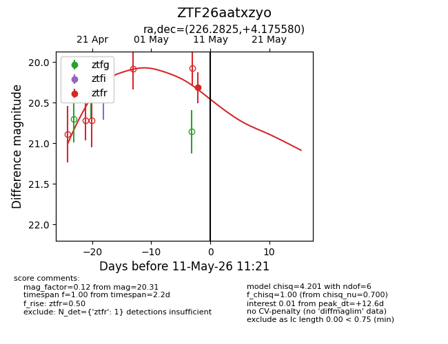
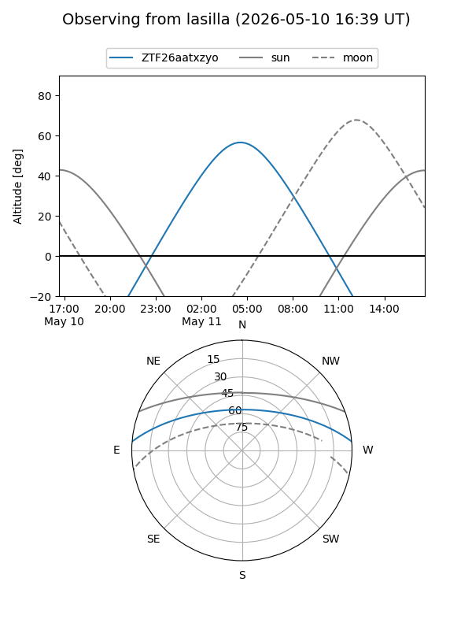
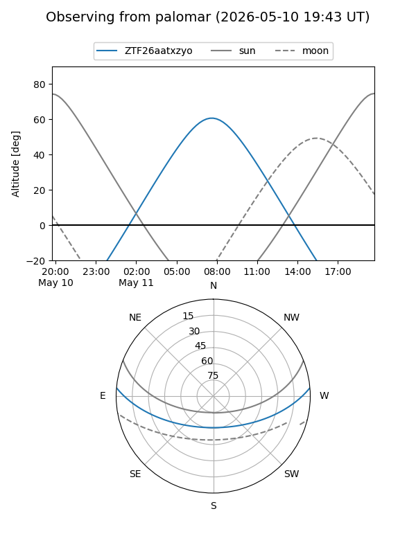
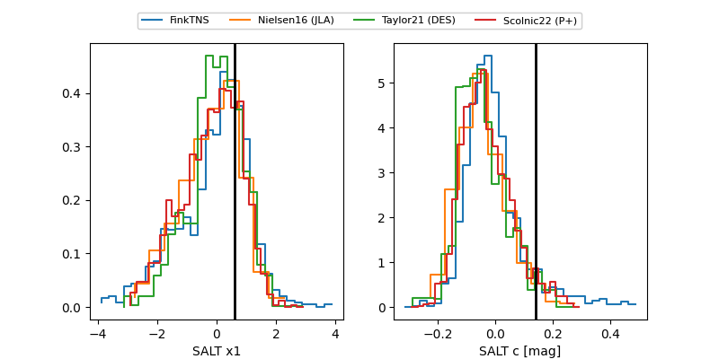

ZTF26aatxzyo
Target ZTF26aatxzyo at 2026-05-11 11:24
Aliases and brokers:
FINK: link
Lasair: link
ALeRCE: link
alt names
ZTF26aatxzyo (ztf,fink_ztf)
Coordinates:
equatorial (ra, dec) = 226.2825,+4.17558
equatorial (HMS+DMS) = 15:05:07.80,+04:10:32.09
galactic (l, b) = (3.1205,+50.71786)
Flags:
Photometry:
last ztfr=20.31
1 ztfr detections
Lightcurve

Visibility


Additional plots
